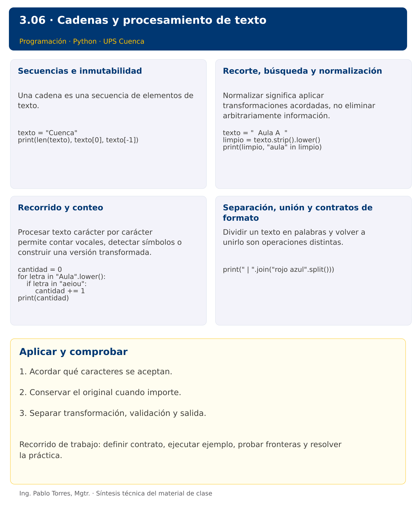

Programación

3.06 · Cadenas y procesamiento de texto · Python
Autor: Ing. Pablo Torres, Mgtr.
Unidad 3: Lenguaje de Programación
Índice del curso · Versión Java · Presentación · Anterior · Siguiente
Conceptos · Demostración · Práctica de clase · Lo esencial
Contexto. Normalizar nombres y extraer información de mensajes requiere tratar el texto como una secuencia. Definir qué cuenta como letra, vocal o palabra evita que dos programas aparentemente correctos resuelvan problemas diferentes.
Prerrequisitos. Funciones, ciclos y decisiones.
1. Conceptos y ejemplos
1.1. Secuencias e inmutabilidad
Una cadena es una secuencia de elementos de texto. Su longitud, índices y reglas de comparación dependen del lenguaje. Las cadenas son inmutables: una transformación produce otro valor. Definir si espacios, tildes y mayúsculas son significativos. Un carácter visible puede requerir varios puntos de código, por lo que “cantidad de letras” no siempre coincide con una longitud técnica.
Aplicar en Python. Los índices de str seleccionan puntos de código Unicode. len cuenta esos puntos de código, no grafemas visibles. Usar texto[0] solo cuando no esté vacío. Un índice negativo cuenta desde el final. Asignar texto[0] = "A" produce TypeError.
texto = "Cuenca"
print(len(texto), texto[0], texto[-1])
1.2. Recorte, búsqueda y normalización
Normalizar significa aplicar transformaciones acordadas, no eliminar arbitrariamente información. Quitar espacios externos no quita todos los espacios interiores. Buscar una subcadena puede servir para clasificar, pero no demuestra que un texto cumpla un formato completo. Conservar el original cuando se necesite mostrar exactamente lo recibido.
Aplicar en Python. strip elimina espacios en extremos. lower o casefold sirven para comparaciones sin distinguir mayúsculas, con diferencias Unicode. in comprueba pertenencia de una subcadena. El corte [inicio:fin] excluye fin y no modifica el texto.
texto = " Aula A "
limpio = texto.strip().lower()
print(limpio, "aula" in limpio)
1.3. Recorrido y conteo
Procesar texto carácter por carácter permite contar vocales, detectar símbolos o construir una versión transformada. Inicializar un acumulador, evaluar cada elemento y definir qué hacer con los no reconocidos. Si el problema cuenta solo a, e, i, o, u, las vocales acentuadas no se incluyen a menos que el contrato lo indique. Probar cadena vacía y texto compuesto únicamente por separadores.
Aplicar en Python. for letra in texto recorre caracteres. Para conservar claridad, empezar con un contador explícito. La concatenación repetida puede ser costosa en textos grandes; reunir partes y unirlas será útil después de listas.
cantidad = 0
for letra in "Aula".lower():
if letra in "aeiou":
cantidad += 1
print(cantidad)
1.4. Separación, unión y contratos de formato
Dividir un texto en palabras y volver a unirlo son operaciones distintas. Definir qué ocurre con separadores repetidos, espacios vacíos y signos. Una salida sin corchetes ni comas debe construirse desde los elementos, no desde la representación de una colección. Estas operaciones preparan el procesamiento de filas y archivos.
Aplicar en Python. split sin argumento agrupa espacios consecutivos y omite vacíos en extremos. split(",") conserva campos vacíos entre comas. join requiere elementos str. No confundir replace con una modificación del mismo objeto.
print(" | ".join("rojo azul".split()))
Los bloques breves anteriores ilustran una operación y pueden requerir variables o imports del contexto. Utilizar la demostración siguiente como programa completo.
Síntesis visual

2. Demostración guiada
Problema. Quitar espacios externos del nombre Cuenca y contar sus vocales ASCII sin distinguir mayúsculas.
Contrato de esta demostración. Recibir una cadena no nula. Contar únicamente a, e, i, o, u después de normalizar mayúsculas. Retornar cero para la cadena vacía. No contar vocales con tilde en este contrato. Mostrar nombre normalizado y conteo.
Fuente: ejemplos/demo.py.
def contar_vocales(texto):
cantidad = 0
for letra in texto.lower():
if letra in "aeiou":
cantidad += 1
return cantidad
nombre = " Cuenca ".strip()
print(nombre)
print(f"Vocales: {contar_vocales(nombre)}")
Ejecutar
Abrir una terminal dentro de 03/3.06-cadenas/python/ejemplos/ y ejecutar:
python3 demo.py
En Windows, usar py en lugar de python3 si esa es la instalación disponible. Comprobar primero su versión.
Salida esperada
Cuenca
Vocales: 3
Interpretación. Seguir las asignaciones y los bloques en orden, identificar qué instrucción produce cada línea y contrastar con el contrato. Modificar un dato por vez y anticipar el resultado antes de ejecutar. La salida de referencia es una expectativa; el registro de verificaciones indica qué ejecuciones se realizaron.
Ejercicios prácticos progresivos
Resolver los siguientes ejercicios en orden. Entregar enunciado, fuente y resultado propio. Los casos mostrados permiten comprobar el contrato y no sustituyen una prueba adicional de frontera.
Ejercicio 01. Longitud y extremos
Para “Cuenca” mostrar longitud, primer y último carácter. Definir cómo evitar acceso a extremos de cadena vacía.
Caso de comprobación:
6 C a
Ejercicio 02. Normalización básica
Quitar espacios externos de “ Aula ” y convertir a mayúsculas.
Caso de comprobación:
AULA
Ejercicio 03. Conteo de vocales
Contar vocales aeiou sin distinguir mayúsculas en “Educacion”.
Caso de comprobación:
5
Ejercicio 04. Conteo de dígitos ASCII
Contar caracteres 0 a 9 en “A2B45”. No aceptar dígitos de otros alfabetos.
Caso de comprobación:
3
Ejercicio 05. Inversión
Invertir “sol” mediante recorrido, sin slicing inverso.
Caso de comprobación:
los
Ejercicio 06. Palíndromo
Comprobar “Anita lava la tina” ignorando espacios ASCII y mayúsculas. No eliminar otros símbolos.
Caso de comprobación:
True
Ejercicio 07. Comprimir espacios
Convertir “ uno dos tres ” en “uno dos tres”.
Caso de comprobación:
uno dos tres
Ejercicio 08. Máscara selectiva
Reemplazar cada vocal ASCII de “programar” por * y conservar los demás caracteres.
Caso de comprobación:
pr*gr*m*r
Ejercicio 09. Iniciales
Obtener iniciales en mayúsculas de “ ana maria torres ”, ignorando espacios repetidos.
Caso de comprobación:
AMT
Ejercicio 10. Contraseña básica
Validar longitud mínima de ocho, al menos una mayúscula ASCII, una minúscula ASCII y un dígito. Rechazar espacios. Probar “Clave123”. No presentar estas reglas como una política de seguridad completa.
Caso de comprobación:
True
3. PC3.06 · Práctica de clase
Definir analizar_codigo(texto): quitar espacios externos, aceptar de 3 a 8 caracteres ASCII alfanuméricos y exigir al menos una letra y un dígito. Retornar una versión en mayúsculas cuando sea válido; lanzar un error concreto cuando no lo sea. No aceptar espacios internos, tildes ni símbolos. Separar validación y presentación.
Requisitos y restricciones
- Resolver en una sola versión, Python o Java.
- Mantener nombres y responsabilidades indicados; explicar cualquier adaptación idiomática.
- Aplicar únicamente los conceptos ya introducidos.
- Conservar las entradas cuando el enunciado lo exija.
- Distinguir valores fuera de contrato de errores que el programa debe gestionar.
Casos de aceptación de la PC
| Entrada / escenario | Resultado esperado |
|---|---|
| ab3 | AB3 |
| abc | falta dígito |
| 123 | falta letra |
| a 1 | carácter inválido |
| a1 | longitud inválida |
| á12 | carácter inválido |
Probar y registrar evidencia
Crear una carpeta personal PC3.06 separada de las demostraciones. Guardar cada caso con entrada, resultado esperado y resultado real. Ejecutar python3 solucion.py desde esa carpeta. Para entradas de teclado, guardar casos/entrada-01.txt y redirigirla con < casos/entrada-01.txt. Para funciones, crear llamadas con los datos de la tabla.
- Registrar
evidencias/PC3.06.mdcon comandos, versión real, salidas y explicación. - Crear un commit funcional como
feat(pc3.06): implementar-regla-principal. - Obtener el hash real con
git rev-parse HEADy anotarlo en la evidencia. - Revisar el cambio con
git show HASHy comparar avances congit diff HASH_ANTERIOR HASH_ACTUAL. Sustituir los marcadores por hashes reales. - Agregar una prueba de frontera distinta de las incluidas y justificar qué error detectaría.
No se requiere proyecto acumulativo ni rúbrica individual de esta PC.
Lo esencial
- Acordar qué caracteres se aceptan.
- Conservar el original cuando importe.
- Separar transformación, validación y salida.
Referencias técnicas
Índice del curso · Versión Java · Presentación · Anterior · Siguiente